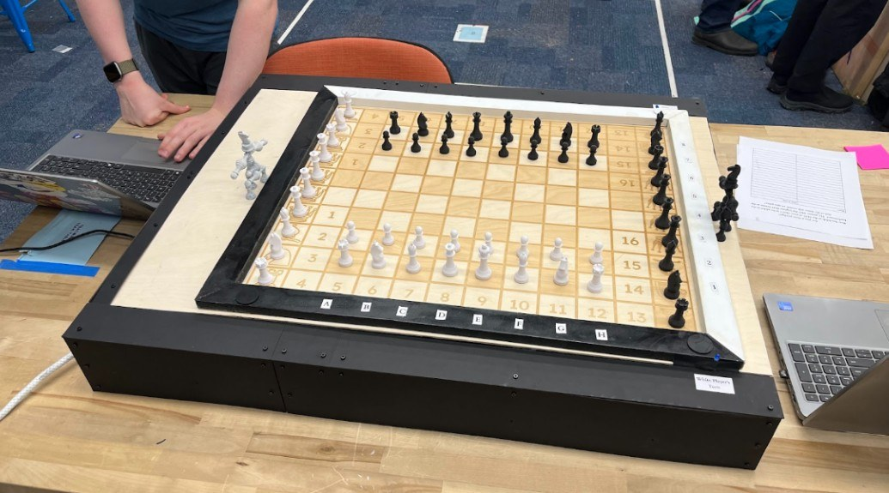
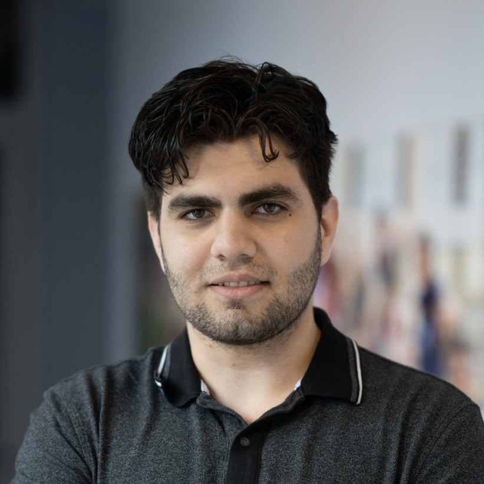

Masterpiece
A self-playing chessboard
A concealed Core-XY gantry moves magnetic chess pieces through a complete computer-vs-computer game.
Olin College of Engineering · Class of 2028
I’m Mehmet, a mechanical engineering student focused on mechanical design, prototyping, and the details that make a system work.
Design · Build · Test · Iterate

Selected work
Mechanisms, robots, and the models
that help explain how they behave.
A self-playing chessboard
A concealed Core-XY gantry moves magnetic chess pieces through a complete computer-vs-computer game.
Robo Lab
Designing and testing a lightweight auger mechanism for repeatable soil-moisture sampling.
Stationary balancing robot
From an angle-only controller to a five-pole design that brings wheel motion back toward zero.
Heat-shield ablation model
Connecting atmosphere, trajectory, heating and material loss in a simplified re-entry model.
Dashboard & electronics enclosure
Improving visibility, packaging and service access within the constraints of a Formula SAE chassis.
Sensing, actuation & control
A two-sensor robot that follows a tape course using calibrated reflectance and pulse-based steering.
About me
I enjoy turning ideas into real, working systems, especially projects that bring hardware, software, and data together. My work spans CAD, rapid prototyping, analysis, and testing.
I like documenting both what works and what doesn’t, then improving the design around real constraints. This portfolio brings together the projects I’ve worked on and what I learned from them.

Contact